在列表树的列表中，我们将根节点的值存储为列表的第一个元素。列表的第二个元素本身将是一个表示左子树的列表。列表的第三个元素将是表示右子树的另一个列表。为了说明这种存储技术，让我们看一个例子。 Figure 1 展示了一个简单的树和相应的列表实现。
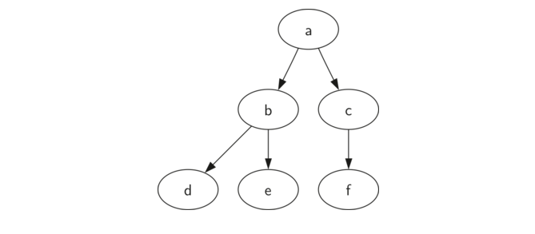
myTree = ['a', #root ['b', #left subtree ['d', [], []], ['e', [], []] ], ['c', #right subtree ['f', [], []], [] ] ]
注意，我们可以使用标准列表索引来访问列表的子树。树的根是 myTree[0]，根的左子树是 myTree[1]，右子树是 myTree[2]。 ActiveCode 1 说明了使用列表创建一个简单的树。一旦树被构建，我们可以访问根和左右子树。 该列表方法的一个非常好的属性是表示子树的列表的结构遵守树定义的结构; 结构本身是递归的！具有根值和两个空列表的子树是叶节点。列表方法的另一个很好的特性是它可以推广到一个有许多子树的树。在树超过二叉树的情况下，另一个子树只是另一个列表。
# Activecode 1 myTree = ['a', ['b', ['d',[],[]], ['e',[],[]] ], ['c', ['f',[],[]], []] ] print(myTree) print('left subtree = ', myTree[1]) print('root = ', myTree[0]) print('right subtree = ', myTree[2])
让我们提供一些使我们能够使用列表作为树的函数来形式化树数据结构的这个定义。注意，我们不会定义一个二叉树类。我们写的函数只是帮助我们操纵一个标准列表，就像我们正在使用一棵树。
def BinaryTree(r): return [r, [], []]
BinaryTree 函数简单地构造一个具有根节点和两个子列表为空的列表。要将左子树添加到树的根，我们需要在根列表的第二个位置插入一个新的列表。我们必须小心。如果列表已经在第二个位置有东西，我们需要跟踪它，并沿着树向下把它作为我们添加的列表的左子节点。Listing 1 展示了插入左子节点的 Python 代码。
# Listing 1 def insertLeft(root,newBranch): t = root.pop(1) if len(t) > 1: root.insert(1,[newBranch,t,[]]) else: root.insert(1,[newBranch, [], []]) return root
注意，要插入一个左子节点，我们首先获得与当前左子节点对应的（可能为空的）列表。然后我们添加新的左子树，添加旧的左子数作为新子节点的左子节点。这允许我们在任何位置将新节点拼接到树中。insertRight 的代码与 insertLeft 类似，如 Listing 2所示。
# Listing 2 def insertRight(root,newBranch): t = root.pop(2) if len(t) > 1: root.insert(2,[newBranch,[],t]) else: root.insert(2,[newBranch,[],[]]) return root
为了完成这组树形函数（见 Listing 3），让我们编写一些访问函数来获取和设置根节点的值，以及获取左或右子树。
# Listing 3 def getRootVal(root): return root[0] def setRootVal(root,newVal): root[0] = newVal def getLeftChild(root): return root[1] def getRightChild(root): return root[2]
我们的第二种表示树的方法使用节点和引用。在这种情况下，我们将定义一个具有根值属性的类，以及左和右子树。 由于这个表示更接近于面向对象的编程范例，我们将继续使用这个表示法用于本章的剩余部分。
使用我们认为树结构类似于下图所示。
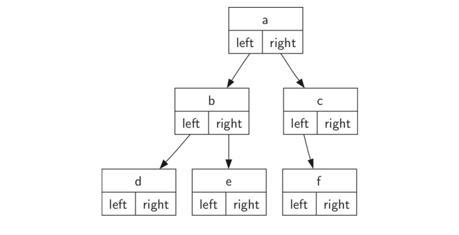
self：节点中的 key 是用来查找位置的；value 是该节点存储的值。
记住这个表示重要的事情是 left 和 right 的属性将成为对 BinaryTree 类的其他实例的引用。 例如，当我们在树中插入一个新的左子节点时，我们创建另一个 BinaryTree 实例，并在根节点中修改self.leftChild 来引用新树节点。
下面直接给出二叉树的代码实现：
class BinaryTree: def __init__(self, root0bj): self.key = root0bj self.leftChild = None self.rightChild = None def insertLeft(self, newNode): if self.leftChild == None: # 如果当前对象的左子树是 None，就将该对象的左子树设置为 BinaryTree(newNode) self.leftChild = BinaryTree(newNode) else: # 如果非 None t = BinaryTree(newNode) # 先让 t 指向新建的该节点 t.leftChild = self.leftChild # 将“原来”节点的左子树设置为该新建节点的左子树 self.leftChild = t # 然后将该新建节点再设置为“原来”节点的左子树 # 与 insertLeft() 函数对称 def insertRight(self, newNode): if self.rightChild == None: self.rightChild = BinaryTree(newNode) else: t = BinaryTree(newNode) t.rightChild = self.rightChild self.rightChild = t def getRightChild(self): return self.rightChild def getLeftChild(self): return self.leftChild def setRootVal(self, obj): self.key = obj def getRootVal(self): return self.key r = BinaryTree('a') print(r.getRootVal()) print(r.getLeftChild()) r.insertLeft('b') print(r.getLeftChild()) print(r.getLeftChild().getRootVal()) r.insertRight('c') print(r.getRightChild()) print(r.getRightChild().getRootVal()) r.getRightChild().setRootVal('hello') print(r.getRightChild().getRootVal())
运行结果：
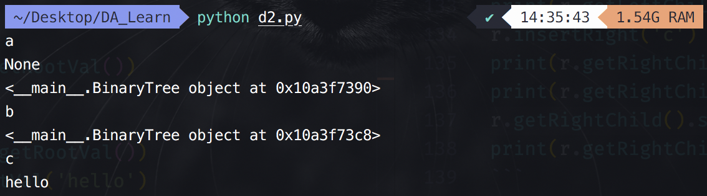
更多内容详见网址对应内容。
我们已经见到了树数据结构的基本功能，现在是看树的一些额外使用模式的时候了。这些使用模式可以分为我们访问树节点的三种方式。有三种常用的模式来访问树中的所有节点。这些模式之间的差异是每个节点被访问的顺序。我们称这种访问节点方式为“遍历”。我们将看到三种遍历方式称为前序，中序和后序 。让我们更仔细地定义这三种遍历方式，然后看看这些模式有用的一些例子。
前序 在前序遍历中，我们首先访问根节点，然后递归地做左侧子树的前序遍历，随后是右侧子树的递归前序遍历。 中序 在一个中序遍历中，我们递归地对左子树进行一次遍历，访问根节点，最后递归遍历右子树。 后序 在后序遍历中，我们递归地对左子树和右子树进行后序遍历，然后访问根节点。
让我们看一些例子，来说明这三种遍历。首先看前序遍历。作为遍历的树的示例，我们将把这本书表示为树。这本书是树的根，每一章都是根节点的一个孩子。章节中的每个章节都是章节的子节点，每个小节都是章节的子节点，依此类推。Figure 5 展示了一本只有两章的书的有限版本。注意，遍历算法适用于具有任意数量子节点的树，但是我们现在使用二叉树。
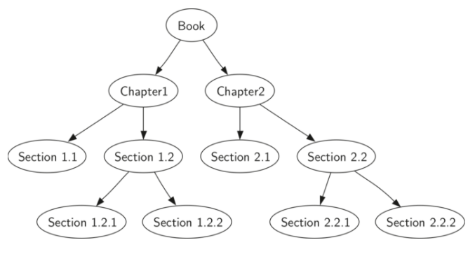
Figure 5
假设你想从前到后读这本书。前序遍历给你正确的顺序。从树的根（Book节点）开始，我们将遵循前序遍历指令。我们递归调用左孩子的 preorder，在这种情况下是 Chapter1。我们再次递归调用左孩子的 preorder 来得到 Section 1.1 。由于 Section 1.1 没有子节点，我们不再进行任何额外的递归调用。当我们完成 Section 1.1，我们将树向上移动到 Chapter1。此时，我们仍然需要访问 Chapter1 的右子树 Section 1.2。和前面一样，我们访问左子树，它将我们带到 Section 1.2.1，然后访问 Section 1.2.2。在 Section 1.2 完成后，我们返回到 Chapter1。然后，我们返回到 Book 节点，并按照相同过程遍历 Chapter2。
编写树遍历的代码惊人地优雅，主要是因为遍历是递归写的。Listing 2 展示了用于二叉树的前序遍历的 Python 代码。
你可能想知道，编写像前序遍历算法的最好方法是什么？是一个简单地使用树作为数据结构的函数，还是树数据结构本身的方法？Listing 2 展示了作为外部函数编写的前序遍历的版本，它将二叉树作为参数。外部函数特别优雅，因为我们的基本情况只是检查树是否存在。如果树参数为 None，那么函数返回而不采取任何操作。
# Listing 2 # 前序遍历树（外部函数） def preoder(tree): if tree is not None: print(tree.getRootVal()) preoder(tree.getLeftChild()) preoder(tree.getRightChild())
我们也可以实现 preorder 作为 BinaryTree 类的方法。Listing 3 中展示了将 preorder 实现为内部方法的代码。注意当我们将代码从内部移动到外部时会发生什么。 一般来说，我们只需用 self 替换 tree。 但是，我们还需要修改基本情况。内部方法必须在进行前序的递归调用之前检查左和右孩子的存在。
# Listing 3 # 前序遍历树（内部函数） def preoder(self): print(self.key) if self.leftChild: self.leftChild.preoder() if self.rightChild: self.rightChild.preoder()
以上哪种方式实现前序最好？ 答案是在这种情况下，实现前序作为外部函数可能更好。原因是你很少只是想遍历树。在大多数情况下，将要使用其中一个基本的遍历模式来完成其他任务。 事实上，我们将在下面的例子中看到后序遍历模式与我们前面编写的用于计算分析树的代码非常接近。 因此，我们用外部函数实现其余的遍历。
Listing 4 中所示的后序遍历算法几乎与前序遍历顺序相同，只是将 print 调用移动到函数的末尾。
# Listing 4 # 后序遍历树 def postoder(tree): if tree is not None: postoder(tree.getLeftChild()) postoder(tree.getRightChild()) print(tree.getRootVal())
在本节中我们最终将看到中序遍历。 在中序遍历中，我们访问左子树，其次是根，最后是右子树。 Listing 6 展示了我们的中序遍历的代码。** 注意，在所有三个遍历函数中，我们只是改变 print 语句相对于两个递归函数调用的位置。**
# 中序遍历树 def inorder(tree): if tree is not None: postoder(tree.getLeftChild()) print(tree.getRootVal()) postoder(tree.getRightChild())
将上述的代码汇总如下：
class BinaryTree: def __init__(self, root0bj): self.key = root0bj self.leftChild = None self.rightChild = None def insertLeft(self, newNode): if self.leftChild == None: # 如果当前对象的左子树是 None，就将该对象的左子树设置为 BinaryTree(newNode) self.leftChild = BinaryTree(newNode) else: # 如果非 None t = BinaryTree(newNode) # 先让 t 指向新建的该节点 t.leftChild = self.leftChild # 将“原来”节点的左子树设置为该新建节点的左子树 self.leftChild = t # 然后将该新建节点再设置为“原来”节点的左子树 # 与 insertLeft() 函数对称 def insertRight(self, newNode): if self.rightChild == None: self.rightChild = BinaryTree(newNode) else: t = BinaryTree(newNode) t.rightChild = self.rightChild self.rightChild = t def getRightChild(self): return self.rightChild def getLeftChild(self): return self.leftChild def setRootVal(self, obj): self.key = obj def getRootVal(self): return self.key # 前序遍历；在 class 内部实现 def preoder(self): print(self.key) if self.leftChild: self.leftChild.preoder() if self.rightChild: self.rightChild.preoder() # 后序遍历；在 class 内部实现 def postoder(self): if self.leftChild: self.leftChild.postoder() if self.rightChild: self.rightChild.postoder() print(self.key) def inorder(self): if self.leftChild: self.leftChild.inorder() print(self.key) if self.rightChild: self.rightChild.inorder() # 前序遍历树 def preoder(tree): if tree is not None: print(tree.getRootVal()) preoder(tree.getLeftChild()) preoder(tree.getRightChild()) # 后序遍历树 def postoder(tree): if tree is not None: postoder(tree.getLeftChild()) postoder(tree.getRightChild()) print(tree.getRootVal()) # 中序遍历树 def inorder(tree): if tree is not None: inorder(tree.getLeftChild()) print(tree.getRootVal()) inorder(tree.getRightChild()) r = BinaryTree('a') r.insertLeft('b') r.insertRight('c') r.getLeftChild().insertLeft('d') r.getLeftChild().insertRight('e') r.getRightChild().insertRight('f') print('外部函数遍历的结果如下：') print('前序遍历的结果是：') preoder(r) print('中序遍历的结果是：') inorder(r) print('后序遍历的结果是：') postoder(r) print('===============') print('内部函数遍历的结果如下：') print('前序遍历的结果是：') r.preoder() print('中序遍历的结果是：') r.inorder() print('后序遍历的结果是：') r.postoder()
运行后结果如下（部分结果）：
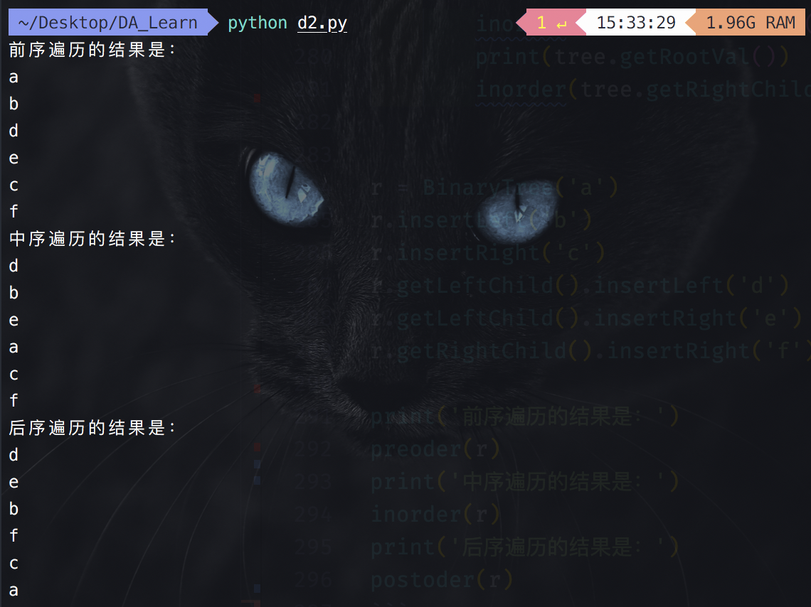
堆是一种完全二叉树，有最大堆和最小堆两种。
这里以最小堆为例。
我们的二叉堆实现的基本操作如下：
BinaryHeap() 创建一个新的，空的二叉堆。insert(k) 向堆添加一个新项。findMin() 返回具有最小键值的项，并将项留在堆中。delMin() 返回具有最小键值的项，从堆中删除该项。isEmpty() 返回 true，否则返回 false。size() 返回堆中的项数。buildHeap(list) 从键列表构建一个新的堆。ActiveCode 1 展示了使用一些二叉堆方法。注意，无论我们向堆中添加项的顺序是什么，每次都删除最小的。我们现在将把注意力转向如何实现这个想法。
# ActiveCode 1 bh = BinHeap() bh.insert(5) bh.insert(7) bh.insert(3) bh.insert(11) print(bh.delMin()) print(bh.delMin()) print(bh.delMin()) print(bh.delMin())
为了使我们的堆有效地工作，我们将利用二叉树的对数性质来表示我们的堆。 为了保证对数性能，我们必须保持树平衡。平衡二叉树在根的左和右子树中具有大致相同数量的节点。 在我们的堆实现中，我们通过创建一个 完整二叉树 来保持树平衡。 一个完整的二叉树是一个树，其中每个层都有其所有的节点，除了树的最底层，从左到右填充。 Figure 1 展示了完整二叉树的示例。
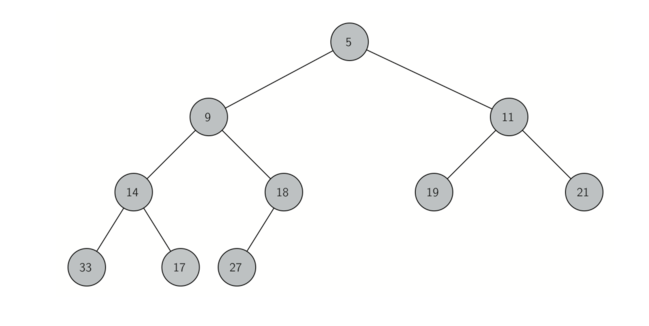
Figure 1
完整二叉树的另一个有趣的属性是，我们可以使用单个列表来表示它。 我们不需要使用节点和引用，甚至列表的列表。因为树是完整的，父节点的左子节点（在位置 p 处）是在列表中位置 2p 中找到的节点。 类似地，父节点的右子节点在列表中的位置 2p + 1。为了找到树中任意节点的父节点，我们可以简单地使用Python 的整数除法。 假定节点在列表中的位置 n，则父节点在位置 n/2。 Figure 2 展示了一个完整的二叉树，并给出了树的列表表示。 请注意父级和子级之间是 2p 和 2p+1 关系。 树的列表表示以及完整的结构属性允许我们仅使用几个简单的数学运算来高效地遍历一个完整的二叉树。 我们将看到，这也是我们的二叉堆的有效实现。
我们用于堆中存储项的方法依赖于维护堆的排序属性。 堆的排序属性如下：在堆中，对于具有父 p 的每个节点 x，p 中的键小于或等于 x 中的键。 Figure 2 展示了具有堆顺序属性的完整二叉树。
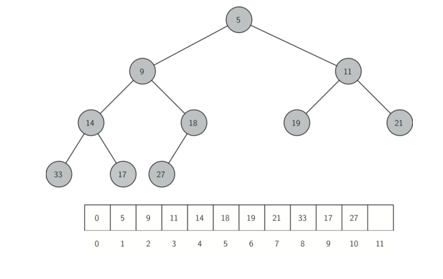
Figure 2
注意： 上面在存储树的 list 中的开头放了一个 0 元素。
我们将开始实现一个二叉堆的构造函数。由于整个二叉堆可以由单个列表表示，所以构造函数将初始化列表和一个 currentSize 属性来跟踪堆的当前大小。 Listing 1 展示了构造函数的 Python 代码。 你会注意到，一个空的二叉堆有一个单一的零作为 heapList 的第一个元素，这个零只是放那里，用于以后简单的整数除法。
# Listing 1 class BinHeap(object): def __init__(self): self.heapList = [0] # 这里要特别注意它初始化的时候是给列表中初始化了一个 0 的；所以后面的 size、节点与父节点、左右子节点之间的关系都可能会与其它地方所学到的不同 self.currentSize = 0
我们将实现的下一个方法是 insert 。 将项添加到列表中最简单，最有效的方法是将项附加到列表的末尾。 它维护完整的树属性。但可能违反堆结构属性。可以编写一个方法，通过比较新添加的项与其父项，我们可以重新获得堆结构属性。 如果新添加的项小于其父项，则我们可以将项与其父项交换。 Figure 2 展示了将新添加的项替换到其在树中的适当位置所需的操作。
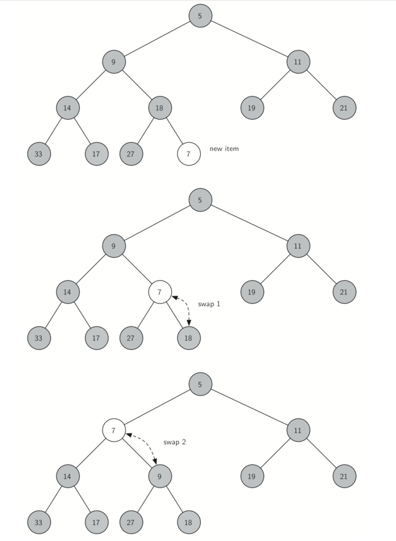
注意，当我们完成一个项时，我们需要恢复新添加的项和父项之间的堆属性。 我们还需保留任何兄弟节点的堆属性。当然，如果新添加的项非常小，我们可能仍需要将其交换另一上层。事实上，我们可能需要交换到树的顶部。 Listing 2 展示了 percUp 方法，它在树中向上遍历一个新项，因为它需要去维护堆属性。 注意，我们可以通过使用简单的整数除法来计算任意节点的父节点。 当前节点的父节点可以通过将当前节点的索引除以 2 来计算。
我们现在可以编写 insert 方法了（见 Listing 3）。 插入方法中的大部分工作都是由 percUp 完成的。 一旦一个新项被追加到树上，percUp 接管并正确定位新项。
# Listing 2s def precUp(self, i): while i//2 > 0: # 如果传入下标的节点的父节点大于 0 if self.heapList[i] < self.heapList[i//2]: # 如果传入下标节点的值比其父节点的值小，就将该节点与其父节点进行交换 tmp = self.heapList[i//2] self.heapList[i//2] = self.heapList[i] self.heapList[i] = tmp i = i // 2 # 将 i 更新到其父节点
# Listing 3 def insert(self, k): self.heapList.append[k] self.currentSize = currentSize + 1 self.precUp(self.currentSize) # 注意这里要先将 currentSize+1 后再调用；因为 [] 原来就有一个 0
使用正确定义的 insert 方法，我们现在可以看 delMin 方法。 因为堆属性要求树的根是树中的最小项，所以找到最小项很容易。delMin 的难点在根被删除后恢复堆结构和堆顺序属性。 我们可以分两步恢复我们的堆。首先，我们将通过获取列表中的最后一个项并将其移动到根位置来恢复根项，保持我们的堆结构属性。 但是，我们可能已经破坏了我们的二叉堆的堆顺序属性。 第二，我们通过将新的根节点沿着树向下推到其正确位置来恢复堆顺序属性。 Figure 3展示了将新的根节点移动到堆中的正确位置所需的交换序列。
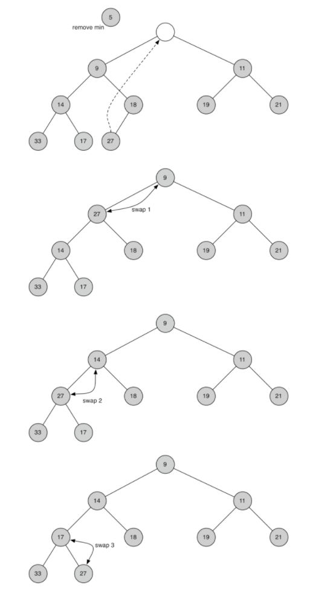
Figure 3
为了维护堆顺序属性，我们所需要做的是将根节点和最小的子节点交换。在初始交换之后，我们可以将节点和其子节点重复交换，直到节点被交换到正确的位置，使它小于两个子节点。树交换节点的代码可以在 Listing 4中的 percDown 和 minChild 方法中找到。
# Listing 4 # 传入某个下标值 i，向下遍历使其处在一个符合“队结构属性”的合适位置 # 传入的 i 是 list [] 中的下标值 def percDown(self, i): while (i*2) <= self.currentSize: # 如果传入下标的节点的左子节点比当前 size 的值小，就说明该节点的左子树可能存在 mc = self.minChild(i) # 得到该节点中值较小的子树的下标值 if self.heapList[i] > self.heapList[mc]: # 如果当前节点的值比的子树的大，就将该节点的值与其值更小的节点的值进行交换 tmp = self.heapList[i] self.heapList[i] = self.heapList[mc] self.heapList[mc] = tmp i = mc # 将节点更新到其值较小的节点 # 返回给定某个节点中左子树右子树值较小的节点的下标值 # 传入的 i 是 list [] 中的下标值 def minChild(self, i): if i*2 + 1 > self.currentSize: # 如果传入下标值对应的右子树的下标值超过了当前的 size，就说明没有右子树，直接返回左子树对应的下标值就好了 return i*2 # 就返回该下标值的左子树的下标值 else: # 否则的话就返回该下标值节点的左子树和右子树中值较小的节点对应的下标值 if self.heapList[i*2] < self.heapList[i*2+1]: return i*2 else: return i*2 + 1
delmin 操作的代码在 Listing 5 中。注意，有难度的工作由辅助函数处理，在这种情况下是 percDown 。
# Listing 5 # 将根节点的值返回并将根节点删除 def delMin(self): retval = self.heapList[1] # 得到根节点 self.heapList[1] = self.heapList[self.currentSize] # 将最后一个节点的值赋值给根节点 self.currentSize = self.currentSize - 1 # 将 size 减 1 self.heapList.pop() # 将最后一个节点的值 pop 出去 self.percDown(1) return retval
为了完成我们对二叉堆的讨论，我们将看从一个列表构建整个堆的方法。你可能想到的第一种方法如下所示。给定一个列表，通过一次插入一个键轻松地构建一个堆。由于你从一个项的列表开始，该列表是有序的，可以使用二分查找找到正确的位置，以大约 操作的成本插入下一个键。 但是，请记住，在列表中间插入项可能需要 操作来移动列表的其余部分，为新项腾出空间。 因此，要在堆中插入 n 个键，将需要总共 操作。 然而，如果我们从整个列表开始，那么我们可以在 操作中构建整个堆。Listing 6 展示了构建整个堆的代码。
# 构建整个堆 def buildHeap(self, alist): i = len(alist) // 2 self.currentSize = len(alist) # 将 size 设置为 list 中元素的个数值 self.heapList = [0] + alist[:] # 得到 self.heapList print('initial heapLiat is {}'.format(self.heapList)) while (i > 0): self.percDown(i) print('current i is {}; current heapList is {}'.format(i, self.heapList)) i = i - 1 print('final heapList is {}'.format(self.heapList))
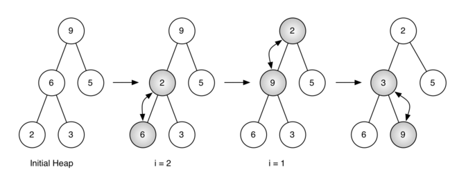
Figure 4 展示了 buildHeap 方法在 [9,6,5,2,3] 的初始树中的节点移动到其正确位置时所做的交换。虽然我们从树的中间开始，并以我们的方式回到根节点，percDown 方法确保最大的子节点总是沿着树向下移动。因为堆是一个完整的二叉树，超过中途点的任何节点都将是树叶，因此没有子节点。注意，当 i = 1 时，我们从树的根节点向下交换，因此可能需要多次交换。正如你在 Figure 4 最右边的两个树中可以看到的，首先 9 从根位置移出，但是 9 在树中向下移动一级之后，percDown 检查下一组子树，以确保它被推到下一层。在这种情况下，它与 3 进行第二次交换。现在 9 已经移动到树的最低层，不能进行进一步交换。将 Figure 4 所示的这一系列交换的列表与树进行比较是有用的。
initial heapLiat is [0, 9, 6, 5, 2, 3] current i is 2; current heapList is [0, 9, 2, 5, 6, 3] current i is 1; current heapList is [0, 2, 3, 5, 6, 9] final heapList is [0, 2, 3, 5, 6, 9]
完整二叉堆（最小堆）代码实现如下：
# 二叉堆(最小堆) class BinHeap(object): def __init__(self): self.heapList = [0] # 这里要特别注意它初始化的时候是给列表中初始化了一个 0 的；所以后面的 size、节点与父节点、左右子节点之间的关系都可能会与其它地方所学到的不同 self.currentSize = 0 # i 节点的父节点：i//2 # i 节点的左子节点：i*2 # i 节点的右子节点：(i*2)+1 # heapList 的实际 size：currentSize+1 # 传入的 i 是 list [] 中的下标值 def precUp(self, i): while i//2 > 0: # 如果传入下标的节点的父节点大于 0 if self.heapList[i] < self.heapList[i//2]: # 如果传入下标节点的值比其父节点的值小，就将该节点与其父节点进行交换 tmp = self.heapList[i//2] self.heapList[i//2] = self.heapList[i] self.heapList[i] = tmp i = i // 2 # 将 i 更新到其父节点 def insert(self, k): self.heapList.append[k] self.currentSize = self.currentSize + 1 self.precUp(self.currentSize) # 注意这里要先将 currentSize+1 后再调用；因为 [] 原来就有一个 0 # 传入某个下标值 i，向下遍历使其处在一个符合“队结构属性”的合适位置 # 传入的 i 是 list [] 中的下标值 def percDown(self, i): while (i*2) <= self.currentSize: # 如果传入下标的节点的左子节点比当前 size 的值小，就说明该节点的左子树可能存在 mc = self.minChild(i) # 得到该节点中值较小的子树的下标值 if self.heapList[i] > self.heapList[mc]: # 如果当前节点的值比的子树的大，就将该节点的值与其值更小的节点的值进行交换 tmp = self.heapList[i] self.heapList[i] = self.heapList[mc] self.heapList[mc] = tmp i = mc # 将节点更新到其值较小的节点 # 返回给定某个节点中左子树右子树值较小的节点的下标值 # 传入的 i 是 list [] 中的下标值 def minChild(self, i): if i*2 + 1 > self.currentSize: # 如果传入下标值对应的右子树的下标值超过了当前的 size，就说明没有右子树，直接返回左子树对应的下标值就好了 return i*2 # 就返回该下标值的左子树的下标值 else: # 否则的话就返回该下标值节点的左子树和右子树中值较小的节点对应的下标值 if self.heapList[i*2] < self.heapList[i*2+1]: return i*2 else: return i*2 + 1 # 将根节点的值返回并将根节点删除 def delMin(self): retval = self.heapList[1] # 得到根节点 self.heapList[1] = self.heapList[self.currentSize] # 将最后一个节点的值赋值给根节点 self.currentSize = self.currentSize - 1 # 将 size 减 1 self.heapList.pop() # 将最后一个节点的值 pop 出去 self.percDown(1) return retval # 构建整个堆 def buildHeap(self, alist): i = len(alist) // 2 self.currentSize = len(alist) # 将 size 设置为 list 中元素的个数值 self.heapList = [0] + alist[:] # 得到 self.heapList print('initial heapLiat is {}'.format(self.heapList)) while (i > 0): self.percDown(i) print('current i is {}; current heapList is {}'.format(i, self.heapList)) i = i - 1 print('final heapList is {}'.format(self.heapList)) bh = BinHeap() bh.buildHeap([9,6,5,2,3]) print(bh.delMin()) print(bh.delMin()) print(bh.delMin()) print(bh.delMin()) print(bh.delMin()) print('final heapList is {}'.format(bh.heapList))
运行结果如下：
initial heapLiat is [0, 9, 6, 5, 2, 3] current i is 2; current heapList is [0, 9, 2, 5, 6, 3] current i is 1; current heapList is [0, 2, 3, 5, 6, 9] final heapList is [0, 2, 3, 5, 6, 9] 2 3 5 6 9 final heapList is [0]
我们可以在 中构建堆的断言可能看起来有点神秘，证明超出了本书的范围。 然而，理解的关键是记住 因子是从树的高度派生的。 对于 buildHeap 中的大部分工作，树比 短。
基于可以从 时间构建堆的事实，你可以使用堆对列表在 时间内排序，作为本章结尾的练习。
二叉堆（最大堆）的代码实现：
只需要将最小堆代码中的相关符号进行简单修改即可。如下：
# 二叉堆(最大堆)(在最小堆代码的基础上自己修改实现) class BinHeap(object): def __init__(self): self.heapList = [0] # 这里要特别注意它初始化的时候是给列表中初始化了一个 0 的；所以后面的 size、节点与父节点、左右子节点之间的关系都可能会与其它地方所学到的不同 self.currentSize = 0 # i 节点的父节点：i//2 # i 节点的左子节点：i*2 # i 节点的右子节点：(i*2)+1 # heapList 的实际 size：currentSize+1 # 传入的 i 是 list [] 中的下标值 def precUp(self, i): while i//2 > 0: if self.heapList[i] > self.heapList[i//2]: # 将最小堆代码中的 `<` 更改为 `>` tmp = self.heapList[i//2] self.heapList[i//2] = self.heapList[i] self.heapList[i] = tmp i = i // 2 # 将 i 更新到其父节点 def insert(self, k): self.heapList.append[k] self.currentSize = self.currentSize + 1 self.precUp(self.currentSize) # 注意这里要先将 currentSize+1 后再调用；因为 [] 原来就有一个 0 # 传入某个下标值 i，向下遍历使其处在一个符合“队结构属性”的合适位置 # 传入的 i 是 list [] 中的下标值 def percDown(self, i): while (i*2) <= self.currentSize: # 如果传入下标的节点的左子节点比当前 size 的值小，就说明该节点的左子树可能存在 mc = self.maxChild(i) # 得到该节点中值较大的子树的下标值 if self.heapList[i] < self.heapList[mc]: # 将最小堆代码中的 `>` 更改为 `<` tmp = self.heapList[i] self.heapList[i] = self.heapList[mc] self.heapList[mc] = tmp i = mc # 将节点更新到其值较大的节点 # 返回给定某个节点中左子树右子树值较大的节点的下标值 # 传入的 i 是 list [] 中的下标值 def maxChild(self, i): if i*2 + 1 > self.currentSize: # 如果传入下标值对应的右子树的下标值超过了当前的 size，就说明没有右子树，直接返回左子树对应的下标值就好了 return i*2 # 就返回该下标值的左子树的下标值 else: # 否则的话就返回该下标值节点的左子树和右子树中值较大的节点对应的下标值 if self.heapList[i*2] > self.heapList[i*2+1]: # 将最小堆代码中的 `<` 更改为 `>` return i*2 else: return i*2 + 1 # 将根节点的值返回并将根节点删除 def delMax(self): retval = self.heapList[1] # 得到根节点 self.heapList[1] = self.heapList[self.currentSize] # 将最后一个节点的值赋值给根节点 self.currentSize = self.currentSize - 1 # 将 size 减 1 self.heapList.pop() # 将最后一个节点的值 pop 出去 self.percDown(1) return retval # 构建整个堆 def buildHeap(self, alist): i = len(alist) // 2 self.currentSize = len(alist) # 将 size 设置为 list 中元素的个数值 self.heapList = [0] + alist[:] # 得到 self.heapList print('initial heapLiat is {}'.format(self.heapList)) while (i > 0): self.percDown(i) print('current i is {}; current heapList is {}'.format(i, self.heapList)) i = i - 1 print('final heapList is {}'.format(self.heapList)) bh = BinHeap() bh.buildHeap([3,20,7,10,18]) print(bh.delMax()) print(bh.delMax()) print(bh.delMax()) print(bh.delMax()) print(bh.delMax()) print('final heapList is {}'.format(bh.heapList))
运行结果如下：
initial heapLiat is [0, 3, 20, 7, 10, 18] current i is 2; current heapList is [0, 3, 20, 7, 10, 18] current i is 1; current heapList is [0, 20, 18, 7, 10, 3] final heapList is [0, 20, 18, 7, 10, 3] 20 18 10 7 3 final heapList is [0]
我们已经看到了两种不同的方法来获取集合中的键值对。回想一下，这些集合实现了 map 抽象数据类型。我们讨论的 map ADT 的两个实现是在列表和哈希表上的二分搜索。在本节中，我们将研究二叉查找树作为从键映射到值的另一种方法。 在这种情况下，我们对树中项的确切位置不感兴趣，但我们有兴趣使用二叉树结构来提供高效的搜索。
在我们看实现之前，先来看看 map ADT 提供的接口。你会注意到，这个接口与Python 字典非常相似。
Map() 创建一个新的空 map。put(key，val) 向 map 中添加一个新的键值对。如果键已经在 map 中，那么用新值替换旧值。get(key) 给定一个键，返回存储在 map 中的值，否则为 None。del 使用 del map[key] 形式的语句从 map 中删除键值对。len() 返回存储在映射中的键值对的数量。in 返回 True 如果给定的键在 map 中。二叉查找树实现：
二叉搜索树依赖于在左子树中找到的键小于父节点的属性，并且在右子树中找到的键大于父代。 我们将这个称为 bst属性。 当我们如上所述实现 Map 接口时，bst 属性将指导我们的实现。 Figure 1说明了二叉搜索树的此属性，展示了没有任何关联值的键。请注意，该属性适用于每个父级和子级。 左子树中的所有键小于根中的键。 右子树中的所有键都大于根。
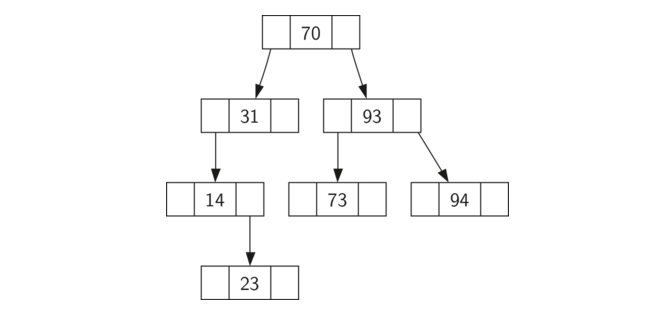
Figure1
现在你知道什么是二叉搜索树，我们将看看如何构造二叉搜索树。Figure 1中的搜索树表示在按照所示的顺序插入以下键之后存在的节点：70,31,93,94,14,23,73。因为 70 是插入树中的第一个键，它是根。接下来，31 小于 70，所以它成为 70 的左孩子。接下来，93 大于 70，所以它成为 70 的右孩子。现在我们有两层的树填充，所以下一个键 94 ，因为 94 大于70 和 93，它成为 93 的右孩子。类似地，14 小于 70 和 31，所以它变成 31 的左孩子。23 也小于 31，所以它必须在左子树 31 中。但是，它大于14，所以它成为 14 的右孩子。
为了实现二叉搜索树，我们将使用类似于我们用于实现链表的节点和引用方法，以及表达式树。但是，因为我们必须能够创建和使用一个空的二叉搜索树，我们的实现将使用两个类。第一个类称为 BinarySearchTree，第二个类称为 TreeNode。 BinarySearchTree 类具有对作为二叉搜索树的根的 TreeNode 的引用。在大多数情况下，外部类中定义的外部方法只是检查树是否为空。如果树中有节点，请求只是传递到 BinarySearchTree 类中定义的私有方法，该方法以 root 作为参数。在树是空的或者我们想要删除树根的键的情况下，我们必须采取特殊的行动。 BinarySearchTree 类构造函数的代码以及一些其他杂项函数如Listing 1所示。
# Listing 1 class BinarySearchTree(object): def __init__(self): self.root = None self.size = 0 def length(self): return self.size def __len__(self): return self.size def __iter__(self): return self.root.__iter__()
TreeNode 类提供了许多辅助函数，使得在 BinarySearchTree 类方法中完成的工作更容易。 TreeNode 的构造函数以及这些辅助函数如 Listing 2所示。你可以在列表中看到许多辅助函数根据自己的位置将节点分类为子节点（左或右）和节点具有的子节点类型。 TreeNode 类还将显式地跟踪父节点作为每个节点的属性。当我们讨论 del 操作符的实现时，你会看到为什么这很重要。
Listing 2 中 TreeNode 另一个有趣的方面是我们使用 Python 的可选参数。可选参数使我们能够在几种不同的情况下轻松创建 TreeNode 。有时我们想要构造一个已经同时具有父和子的新 TreeNode 。对于现有的父和子，我们可以传递父和子作为参数。在其他时候，我们将使用键值对创建一个 TreeNode，我们不会为父或子传递任何参数。在这种情况下，将使用可选参数的默认值。
# Listing 2 class TreeNode(object): def __init__(self, key, val, left=None, right=None, parent=None): self.key = key self.payload = val self.leftChild = left self.rightChild = right self.parent = parent # 返回左子树；若不赋值则默认为 None def hasLeftChild(self): return self.leftChild # 返回右子树；若不赋值则默认为 None def hasRightChild(self): return self.rightChild # 如果 parent 不为 None，则看该节点的 parent 的左孩子是否等于该节点（也就是看这个节点是不是左孩子）；如果是就返回 True；如果不是就返回 False；否则就返回 parent（也就是为 None） # 整理一下就是：如果该节点为根节点，就返回 None；否则就判断该节点是否为左孩子节点，如果是就返回 True，否则就返回 False # 判断该节点是否为左孩子节点 def isLeftChild(self): # and 会实现从左到右扫描，返回第一个为假的元素；若都为假就返回最后一个元素 return self.parent and self.parent.leftChild == self # 判断该节点是否为右孩子节点 def isRightChild(self): return self.parent and self.parent.rightChild == self # 判断该节点是否为根结点（根结点的 parent 为 None）；如果是就返回 True，否则就返回 False def isRoot(self): return not self.parent # 判断是不是叶子节点 # 如果左孩子和右孩子只要有一个存在（非 None），就会返回为 False，也就是不是叶子节点；如果两个都为 None，就会返回 True，表示是叶子节点 def isLeaf(self): return not (self.rightChild or self.leftChild) # or 可以实现从左到右扫描返回第一个为真的元素，没有的话就返回最后一个元素 # 返回该节点的孩子节点；如果右孩子存在就返回右孩子，否则就返回左孩子；如果都不存在就返回 None（左子节点） def hasAnyChildren(self): return self.rightChild or self.leftChild # 只右左孩子和右孩子都存在，才会返回左孩子；否则就返回 None # 可以自己画一个表格，就 4 种情况，画出来就知道了 def hasBothChildren(self): return self.rightChild and self.leftChild # 替换某个节点（但是并没有递归的向下替换；要因具体情况而定） def replaceNodeData(self,key,value,lc,rc): self.key = key self.payload = value self.leftChild = lc self.rightChild = rc if self.hasLeftChild(): # 如果该节点有左孩子，那么就将左孩子的 parent 设置为它 self.leftChild.parent = self if self.hasRightChild(): self.rightChild.parent = self
现在我们有了 BinarySearchTree shell 和 TreeNode，现在是时候编写 put 方法，这将允许我们构建二叉搜索树。 put 方法是BinarySearchTree 类的一个方法。此方法将检查树是否已具有根。如果没有根，那么 put 将创建一个新的 TreeNode 并将其做为树的根。如果根节点已经就位，则 put 调用私有递归辅助函数 _put 根据以下算法搜索树：
TreeNode 对象，并将对象插入到上一步发现的节点。Listing 3 展示了在树中插入一个新节点的 Python 代码。_put 函数按照上述步骤递归编写。请注意，当一个新的子节点插入到树中时，currentNode 将作为父节点传递给新的树节点。
我们实现插入的一个重要问题是重复的键不能正确处理。当我们的树被实现时，重复键将在具有原始键的节点的右子树中创建具有相同键值的新节点。这样做的结果是，具有新键的节点将永远不会在搜索期间被找到。处理插入重复键的更好方法是将新键相关联的值替换旧值。我们将修复这个bug作为练习。
# Listing 3 def put(self, key, val): if self.root: # 如果已经🈶️根 self._put(key, val, self.root) else: # 如果没有根就直接创建新 node 将其作为根结点 self.root = TreeNode(key, val) self.size = self.size + 1 def _put(self, key, val, currentNode): if key < currentNode.key: # 如果要 put 的值比当前节点的值小，就往左子树插入 if currentNode.hasLeftChild(): # 如果当前节点有左子树 self._put(key, val, currentNode.leftChild) # 就递归调用 else: # 如果没有左子树就将该节点插入 currentNode.leftChild = TreeNode(key, val, parent=currentNode) else: # 如果要 put 的值比当前节点的值大或等于 if currentNode.hasRightChild(): self._put(key, val, currentNode.rightChild) else: currentNode.rightChild = TreeNode(key, val, parent=currentNode)
当 put 方法定义后，我们可以通过使用 __setitem__ 方法调用（参见 Listing 4 ）put 方法来重载赋值的 [] 运算符。这使得我们可以编写像 myZipTree['Plymouth'] = 55446 这样的 Python 语句，就像 Python 字典一样。
# Listing 4 def __setitem__(self, k, v): self.put(k, v)
Figure 2 展示了用于将新节点插入二叉搜索树的过程。 浅阴影的节点指示在插入过程期间访问的节点。
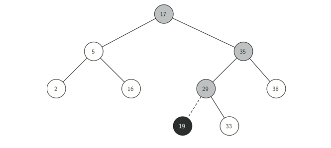
Figure 2
一旦树被构造，下一个任务是实现对给定键的值的检索。get 方法比 put 方法更容易，因为它只是递归地搜索树，直到它到达不匹配的叶节点或找到匹配的键。当找到匹配的键时，返回存储在节点的有效载荷中的值。
Listing 5 展示了 get ，_get 和 __getitem__ 的代码。 _get 方法中的搜索代码使用和 _put 相同的逻辑来选择左或右子节点。请注意，_get 方法返回一个 TreeNode ，这允许 _get 用作其他 BinarySearchTree 方法的一个灵活的辅助方法，可能需要利用除了有效载荷之外的 TreeNode 的其他数据。
通过实现 __getitem__ 方法，我们可以编写一个类似于访问字典的 Python 语句，而实际上我们使用的是二叉搜索树，例如 z = myZipTree ['Fargo'] 。正如你所看到的，所有的 __getitem__ 方法都是调用 get 。
# Listing 5 def get(self, key): if self.root: res = self._get(key, self.root) # 从根节点开始找 if res: # 非空就返回 return res.payload else: return None else: # 若根结点不存在就返回 None return None def _get(self, key, currentNode): if not currentNode: # 如果节点为 None，则返回 None return None elif currentNode.key == key: # 如果找到就返回该节点 return currentNode elif key < currentNode.key: # 如果值比该节点值小就往左边找 return self._get(key, currentNode.leftChild) else: # 否则往右边找 return self._get(key, currentNode.rightChild) def __getitem__(self, key): return self.get(key)
使用 get ，我们可以通过为 BinarySearchTree 写一个__contains__ 方法来实现 in 操作。 __contains__ 方法将简单地调用 get 并在 get 返回值时返回 True，如果返回 None 则返回 False。 __contains__ 的代码如Listing 6所示。
# Listing 6 # 实现 in 操作 def __contains__(self, key): if self._get(key, self.root): return True # 如果有就返回 True else: return False
回想一下，__contains__ 重载了 in 操作符，允许我们写出如下语句：
if 'Northfield' in myZipTree: print("oom ya ya")
最后，我们将注意力转向二叉搜索树中最具挑战性的方法，删除一个键（参见 Listing 7）。 第一个任务是通过搜索树来找到要删除的节点。 如果树具有多个节点，我们使用 _get 方法搜索以找到需要删除的 TreeNode。 如果树只有一个节点，这意味着我们删除树的根，但是我们仍然必须检查以确保根的键匹配要删除的键。 在任一情况下，如果未找到键，del 操作符将引发错误。
# Listing 7 def delete(self, key): if self.size > 1: nodeToRemove = self._get(key, self.root) if nodeToRemove: #如果要删除的节点为空，则删除该节点 self.remove(nodeToRemove) self.size = self.size - 1 else: raise KeyError('Error, key not in tree') elif self.size == 1 and self.root.key == key: self.root = None self.size = self.size - 1 else: raise KeyError('Error, key not in tree') def __delitem__(self, key): self.delete(key)
一旦我们找到了我们要删除的键的节点，我们必须考虑三种情况：
该部分理解可参考 [reference] - [二叉搜索树删除节点思路.png]。
第一种情况很简单（见 Listing 8）。 如果当前节点没有子节点，我们需要做的是删除节点并删除对父节点中该节点的引用。 此处的代码如下所示。
# Listing 8 if currentNode.isLeaf(): # 若是叶子节点，也就是没有子节点 if currentNode == currentNode.parent.leftChild: # 如果该节点是其 parent 的左孩子，也就是它是一个左子节点 currentNode.parent.leftChild = None # 将该节点的 parent 的左孩子设置为 None else: currentNode.parent.rightChild = None
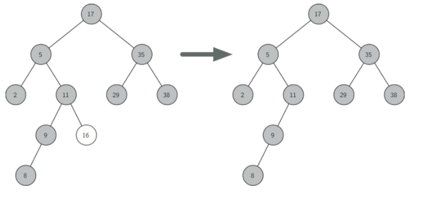
Figure 3
第二种情况只是稍微复杂一点（见 Listing 9）。如果一个节点只有一个孩子，那么我们可以简单地促进孩子取代其父。此案例的代码展示在下一个列表中。当你看这个代码，你会看到有六种情况要考虑。由于这些情况相对于左孩子或右孩子对称，我们将仅讨论当前节点具有左孩子的情况。决策如下：
replaceNodeData 方法来替换 key，payload，leftChild 和 rightChild 数据。# Listing 9 else: # 如果要删除的节点只有一个子节点 if currentNode.hasLeftChild(): # 如果该节点有左孩子 if currentNode.isLeftChild(): # 如果当前节点是左孩子 currentNode.leftChild.parent = currentNode.parent # 将当前节点的左子节点的 parent 设置为当前节点的 parent 节点 currentNode.parent.leftChild = currentNode.leftChild # 将当前节点的 parent 节点的左子节点设置为当前节点的左子树 elif currentNode.isRightChild(): # 如果当前节点是右孩子 currentNode.leftChild.parent = currentNode.parent # 将当前节点的左子节点的 parent 设置为当前节点的 parent 节点 currentNode.parent.rightChild = currentNode.leftChild # 将当前节点的 parent 节点的右子节点设置为当前节点的左子树 else: # 如果是根节点 currentNode.replaceNodeData(currentNode.leftChild.key, # 就将该节点的左子节点的 key、value 设置为当前节点（root），并将当前节点的左右子树分别指向该节点的左右子树 currentNode.leftChild.payload, currentNode.leftChild.leftChild, currentNode.leftChild.rightChild) else: # 如果该节点有右孩子 if currentNode.isLeftChild(): # 如果当前节点是左孩子 currentNode.rightChild.parent = currentNode.parent # 将当前节点的右子节点的 parent 设置为当前节点的 parent 节点 currentNode.parent.leftChild = currentNode.rightChild # 将当前节点的 parent 节点的左子节点设置为当前节点的右子树 elif currentNode.isRightChild(): # 如果当前节点是右孩子 currentNode.rightChild.parent = currentNode.parent # 将当前节点的右子节点的 parent 设置为当前节点的 parent 节点 currentNode.parent.rightChild = currentNode.rightChild # 将当前节点的 parent 节点的右子节点设置为当前节点的右子树 else: # 如果是根节点 currentNode.replaceNodeData(currentNode.rightChild.key, currentNode.rightChild.payload, currentNode.rightChild.leftChild, currentNode.rightChild.rightChild)
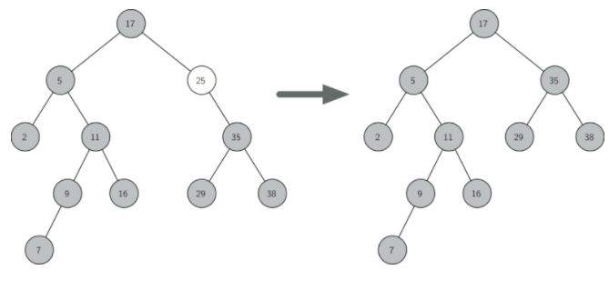
第三种情况是最难处理的情况（见Listing 10）。 如果一个节点有两个孩子，那么我们不太可能简单地提升其中一个节点来占据节点的位置。 然而，我们可以在树中搜索可用于替换被调度删除的节点的节点。 我们需要的是一个节点，它将保留现有的左和右子树的二叉搜索树关系。 执行此操作的节点是树中具有次最大键的节点。 我们将这个节点称为后继节点，我们将看一种方法来很快找到后继节点。 继承节点保证没有多于一个孩子，所以我们知道使用已经实现的两种情况删除它。 一旦删除了后继，我们只需将它放在树中，代替要删除的节点。
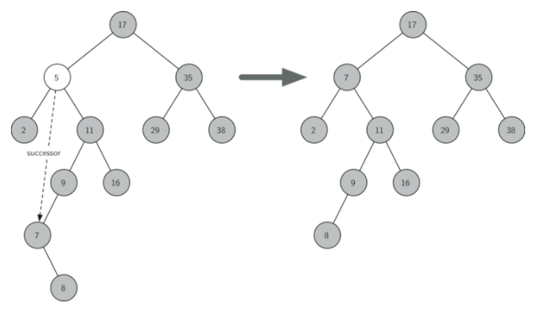
Figure 5
处理第三种情况的代码展示在下一个列表中。（这里对原文中的代码进行了修改，采用了递归的方法去删除后继节点）
# Listing 10 elif currentNode.hasBothChildren(): # 如果当前节点有两个节点 succ = currentNode.findSuccessor() # 找到该节点的后继节点 # succ.spliceOut() currentNode.key = succ.key currentNode.payload = succ.payload self.remove(succ) # 递归的删除后继节点
找到后继的代码如下所示（见 Listing 11），是 TreeNode 类的一个方法。此代码利用二叉搜索树的相同属性，采用中序遍历从最小到最大打印树中的节点。在寻找接班人时，有三种情况需要考虑：
第一个条件是对于我们从二叉搜索树中删除节点时唯一重要的条件。但是，findSuccessor 方法具有其他用法，我们将在本章结尾的练习中介绍。
调用 findMin 方法来查找子树中的最小键。你应该说服自己，任何二叉搜索树中的最小值键是树的最左子节点。因此，findMin 方法简单地循环子树的每个节点中的 leftChild 引用，直到它到达没有左子节点的节点。
# Listing 11 # 寻找后继节点 def findSuccessor(self): succ = None if self.hasRightChild(): # 如果节点有右子节点，则后继节点是右子树中的最小的键（对应的节点） succ = self.rightChild.findMin() else: # 如果节点没有右子节点 if self.parent: # 并且父节点存在 if self.isLeftChild(): # 如果该节点是一个左子节点 succ = self.parent # 则其父节点就是后继节点 else: # 如果该节点是一个右子节点 self.parent.rightChild = None # 因为不能包括此节点，所以先将原来指向该节点的“指针”指向 None succ = self.parent.findSuccessor() # 则此节点的后继节点是其父节点的后继节点 self.parent.rightChild = self # 最后再还原，将指向该节点的“指针”恢复 return succ # 找到节点中的值最小的键 def findMin(self): current = self # 从当前节点开始 while current.hasLeftChild(): # 只要当前节点有左子树，就一直向下遍历 current = current.leftChild return current
完整代码如下：
# 修正原版 class TreeNode(object): def __init__(self, key, val, left=None, right=None, parent=None): self.key = key self.payload = val self.leftChild = left self.rightChild = right self.parent = parent # 返回左子树；若不赋值则默认为 None def hasLeftChild(self): return self.leftChild # 返回右子树；若不赋值则默认为 None def hasRightChild(self): return self.rightChild # 如果 parent 不为 None，则看该节点的 parent 的左孩子是否等于该节点（也就是看这个节点是不是左孩子）；如果是就返回 True；如果不是就返回 False；否则就返回 parent（也就是为 None） # 整理一下就是：如果该节点为根节点，就返回 None；否则就判断该节点是否为左孩子节点，如果是就返回 True，否则就返回 False # 判断该节点是否为左孩子节点 def isLeftChild(self): # and 会实现从左到右扫描，返回第一个为假的元素；若都为假就返回最后一个元素 return self.parent and self.parent.leftChild == self # 判断该节点是否为右孩子节点 def isRightChild(self): return self.parent and self.parent.rightChild == self # 判断该节点是否为根结点（根结点的 parent 为 None）；如果是就返回 True，否则就返回 False def isRoot(self): return not self.parent # 判断是不是叶子节点 # 如果左孩子和右孩子只要有一个存在（非 None），就会返回为 False，也就是不是叶子节点；如果两个都为 None，就会返回 True，表示是叶子节点 def isLeaf(self): return not (self.rightChild or self.leftChild) # or 可以实现从左到右扫描返回第一个为真的元素，没有的话就返回最后一个元素 # 返回该节点的孩子节点；如果右孩子存在就返回右孩子，否则就返回左孩子；如果都不存在就返回 None（左子节点） def hasAnyChildren(self): return self.rightChild or self.leftChild # 只右左孩子和右孩子都存在，才会返回左孩子；否则就返回 None # 可以自己画一个表格，就 4 种情况，画出来就知道了 def hasBothChildren(self): return self.rightChild and self.leftChild # 替换某个节点（但是并没有递归的向下替换；要因具体情况而定） def replaceNodeData(self,key,value,lc,rc): self.key = key self.payload = value self.leftChild = lc self.rightChild = rc if self.hasLeftChild(): # 如果该节点有左孩子，那么就将左孩子的 parent 设置为它 self.leftChild.parent = self if self.hasRightChild(): self.rightChild.parent = self # # 这个函数结合前面的 remove 函数来理解；该函数主要是被应用在找到的后继节点上 # # 该函数未学习理解 # def spliceOut(self): # if self.isLeaf(): # 如果（后继节点）是叶子节点 # if self.isLeftChild(): # 如果是左孩子 # self.parent.leftChild = None # 就将该节点的 parent 的左孩子指向为 None # else: # 如果是右孩子 # self.parent.rightChild = None # elif self.hasAnyChildren(): # 如果非叶子节点 # if self.hasLeftChild(): # 如果有左孩子 # if self.isLeftChild(): # 如果当前节点是左孩子 # self.parent.leftChild = self.leftChild # 将当前节点的 parent 的左孩子指向当前节点的左孩子 # else: # 如果当前节点是右孩子 # self.parent.rightChild = self.leftChild # 将当前节点的 parent 的右孩子指向当前节点的左孩子 # self.leftChild.parent = self.parent # 将当前节点左孩子的 parent 指向当前节点的 parent # else: # 如果有右孩子 # if self.isLeftChild(): # self.parent.leftChild = self.rightChild # else: # self.parent.rightChild = self.rightChild # self.rightChild.parent = self.parent # 寻找后继节点 def findSuccessor(self): succ = None if self.hasRightChild(): # 如果节点有右子节点，则后继节点是右子树中的最小的键（对应的节点） succ = self.rightChild.findMin() else: # 如果节点没有右子节点 if self.parent: # 并且父节点存在 if self.isLeftChild(): # 如果该节点是一个左子节点 succ = self.parent # 则其父节点就是后继节点 else: # 如果该节点是一个右子节点 self.parent.rightChild = None # 因为不能包括此节点，所以先将原来指向该节点的“指针”指向 None succ = self.parent.findSuccessor() # 则此节点的后继节点是其父节点的后继节点 self.parent.rightChild = self # 最后再还原，将指向该节点的“指针”恢复 return succ # 找到节点中的值最小的键 def findMin(self): current = self # 从当前节点开始 while current.hasLeftChild(): # 只要当前节点有左子树，就一直向下遍历 current = current.leftChild return current class BinarySearchTree(object): def __init__(self): self.root = None self.size = 0 def length(self): return self.size def __len__(self): return self.size def __iter__(self): return self.root.__iter__() def put(self, key, val): if self.root: # 如果已经🈶️根 self._put(key, val, self.root) else: # 如果没有根就直接创建新 node 将其作为根结点 self.root = TreeNode(key, val) self.size = self.size + 1 def _put(self, key, val, currentNode): if key < currentNode.key: # 如果要 put 的值比当前节点的值小，就往左子树插入 if currentNode.hasLeftChild(): # 如果当前节点有左子树 self._put(key, val, currentNode.leftChild) # 就递归调用 else: # 如果没有左子树就将该节点插入 currentNode.leftChild = TreeNode(key, val, parent=currentNode) else: # 如果要 put 的值比当前节点的值大或等于 if currentNode.hasRightChild(): self._put(key, val, currentNode.rightChild) else: currentNode.rightChild = TreeNode(key, val, parent=currentNode) def __setitem__(self, k, v): self.put(k, v) def get(self, key): if self.root: res = self._get(key, self.root) # 从根节点开始找 if res: # 非空就返回 return res.payload else: return None else: # 若根结点不存在就返回 None return None def _get(self, key, currentNode): if not currentNode: # 如果节点为 None，则返回 None return None elif currentNode.key == key: # 如果找到就返回该节点 return currentNode elif key < currentNode.key: # 如果值比该节点值小就往左边找 return self._get(key, currentNode.leftChild) else: # 否则往右边找 return self._get(key, currentNode.rightChild) def __getitem__(self, key): return self.get(key) # 实现 in 操作 def __contains__(self, key): if self._get(key, self.root): return True # 如果有就返回 True else: return False def delete(self, key): if self.size > 1: nodeToRemove = self._get(key, self.root) if nodeToRemove: #如果要删除的节点为空，则删除该节点 self.remove(nodeToRemove) self.size = self.size - 1 else: raise KeyError('Error, key not in tree') elif self.size == 1 and self.root.key == key: self.root = None self.size = self.size - 1 else: raise KeyError('Error, key not in tree') def __delitem__(self, key): self.delete(key) # 该部分理解可参考 [reference] - [二叉搜索树删除节点思路.png] def remove(self, currentNode): if currentNode.isLeaf(): # 若是叶子节点，也就是没有子节点 if currentNode == currentNode.parent.leftChild: # 如果该节点是其 parent 的左孩子，也就是它是一个左子节点 currentNode.parent.leftChild = None # 将该节点的 parent 的左孩子设置为 None else: currentNode.parent.rightChild = None elif currentNode.hasBothChildren(): # 如果当前节点有两个节点 succ = currentNode.findSuccessor() # 找到该节点的后继节点 # succ.spliceOut() currentNode.key = succ.key currentNode.payload = succ.payload self.remove(succ) # 递归的删除后继节点 else: # 如果要删除的节点只有一个子节点 if currentNode.hasLeftChild(): # 如果该节点有左孩子 if currentNode.isLeftChild(): # 如果当前节点是左孩子 currentNode.leftChild.parent = currentNode.parent # 将当前节点的左子节点的 parent 设置为当前节点的 parent 节点 currentNode.parent.leftChild = currentNode.leftChild # 将当前节点的 parent 节点的左子节点设置为当前节点的左子树 elif currentNode.isRightChild(): # 如果当前节点是右孩子 currentNode.leftChild.parent = currentNode.parent # 将当前节点的左子节点的 parent 设置为当前节点的 parent 节点 currentNode.parent.rightChild = currentNode.leftChild # 将当前节点的 parent 节点的右子节点设置为当前节点的左子树 else: # 如果是根节点 currentNode.replaceNodeData(currentNode.leftChild.key, # 就将该节点的左子节点的 key、value 设置为当前节点（root），并将当前节点的左右子树分别指向该节点的左右子树 currentNode.leftChild.payload, currentNode.leftChild.leftChild, currentNode.leftChild.rightChild) else: # 如果该节点有右孩子 if currentNode.isLeftChild(): # 如果当前节点是左孩子 currentNode.rightChild.parent = currentNode.parent # 将当前节点的右子节点的 parent 设置为当前节点的 parent 节点 currentNode.parent.leftChild = currentNode.rightChild # 将当前节点的 parent 节点的左子节点设置为当前节点的右子树 elif currentNode.isRightChild(): # 如果当前节点是右孩子 currentNode.rightChild.parent = currentNode.parent # 将当前节点的右子节点的 parent 设置为当前节点的 parent 节点 currentNode.parent.rightChild = currentNode.rightChild # 将当前节点的 parent 节点的右子节点设置为当前节点的右子树 else: # 如果是根节点 currentNode.replaceNodeData(currentNode.rightChild.key, currentNode.rightChild.payload, currentNode.rightChild.leftChild, currentNode.rightChild.rightChild) mytree = BinarySearchTree() mytree[4]="blue" mytree[2]="red" mytree[1]="yellow" mytree[3]="at" mytree[5]="at" mytree[6]="at" print('root key: {}'.format(mytree.root.key)) print('root-leftChild key: {}'.format(mytree.root.leftChild.key)) print('root-rightChild key: {}'.format(mytree.root.rightChild.key)) print('root-leftChild-leftChild key: {}'.format(mytree.root.leftChild.leftChild.key)) print('root-leftChild-rightChild key: {}'.format(mytree.root.leftChild.rightChild.key)) print('root-rightChild-rightChild: {}'.format(mytree.root.rightChild.rightChild.key)) print('lenght is {}'.format(len(mytree))) print('===================') print('start delete a item') # del mytree[2] mytree.delete(2) print('mark location') print('lenght is {}'.format(len(mytree))) print('root key: {}'.format(mytree.root.key)) print('root-leftChild key: {}'.format(mytree.root.leftChild.key)) print('root-rightChild key: {}'.format(mytree.root.rightChild.key)) print('root-leftChild-leftChild key: {}'.format(mytree.root.leftChild.leftChild.key)) # print('root-leftChild-rightChild key: {}'.format(mytree.root.leftChild.rightChild.key)) print('root-rightChild-rightChild: {}'.format(mytree.root.rightChild.rightChild.key))
运行结果如下：
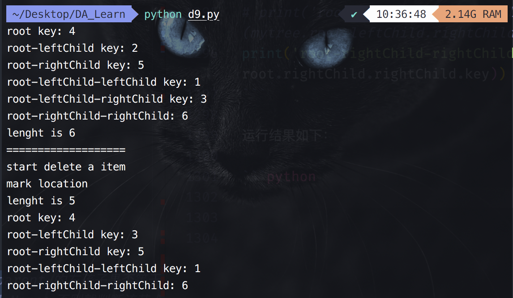